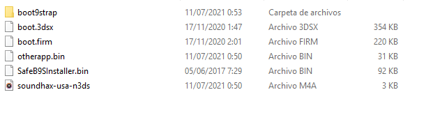
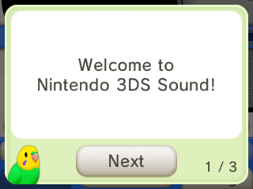
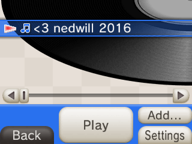

3DS Hacks GuideSoundhaxUpdate 11.4 Broke soundhax, It only works up to firmware 11.3What you need.The Lastest Version of Soundhax (select the region and firmware version) The Lastest Version of SafeB9SInstaller The Lastest Version of Boot9Strap The Lastest Version of Luma3DS The Lastest Version of universal-otherapp The 3ds A SD card A SD card reader A PC Internet ConnectionInstall InstructionsSection 1 Prep Work1. Power off your device 2.Insert your SD card into your computer 3.Copy the Soundhax .m4a to the root of your SD card 4.Copy otherapp.bin to the root of your SD card 5.Copy boot.firm and boot.3dsx from the Luma3DS .zip to the root of your SD card 6.Create a folder named boot9strap on the root of your SD card 7.Copy boot9strap.firm and boot9strap.firm.sha from the boot9strap .zip to the /boot9strap/ folder on your SD card 8.Copy SafeB9SInstaller.bin from the SafeB9SInstaller .zip to the root of your SD card The folder structure must be like this one  9. Reinsert the sd card into your device 10. turn it onSection 2 Launching The ExploitOpen the nintendo 3ds sound  Go to /SDCARD then play “<3 nedwill 2016”  If exploit was sucessfull you will boot into the SafeB9SInstaller.Section 3 Installing B9S1. Wait to all checks to complete 2.When prompted Give the combo keys to install B9S 3. Once completed press A to reboot the consoleSection 4 Configuring Luma3DS1. your device should be on the luma 3ds configuration screen. 2. Use the DPAD and the A button to turn on the following option Show NAND or user string in system settings 3. Press Start to reboot your console Your device is now running cfw (luma3ds) Now we need to install the esential apps, it isn't ready yet |